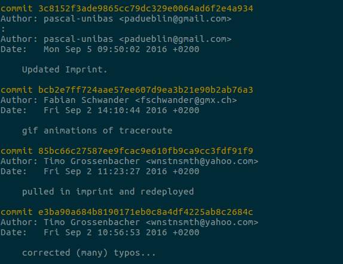
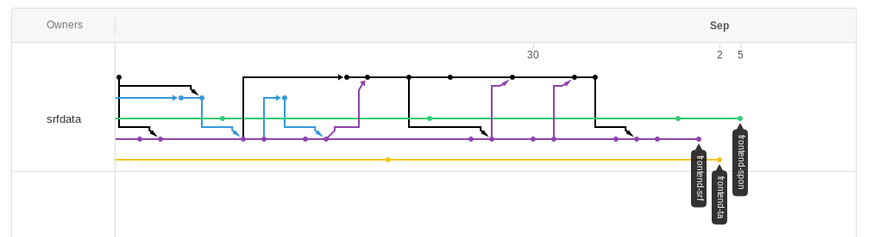

MAZ-Multimediatag 2016
Git, GitHub und Co.
Was geht mich das an?
Timo Grossenbacher, SRF Data
Präsentation vefügbar unter grssnbchr.github.io/mazmmt-git
Über mich
Ursprünglich: Studium Geographie & Informatik
März - Oktober 2014: Tages-Anzeiger
Seit November 2014 beim Team von SRF Data als Programmierer und Datenjournalist

SRF Data

Ein Beispiel: Nachrichtendienst-Gesetz
Das Problem
1. Wie arbeiten wir in einem Team von 3-5 Leuten effizient zusammen?
2. Wie stellen wir sicher, dass wir unsere Daten und unseren Code nicht verlieren?
3. Wie können wir unsere Analysen und Daten möglichst einfach veröffentlichen und reproduzierbar machen?
Die Lösung:
Versionskontrollsoftware
Moderne Softwareentwicklung findet in Entwicklungsschritten (Iterationen) statt
z.B.: Neue Features, Fehler beheben (Bugfixing), neuer Datensatz, usw.
Jeder Entwicklungsschritt hat einen Autor
Jeder Entwicklungsschritt kann eine oder mehrere Dateien umfassen
Keine Angst: Beispiel kommt gleich :-)
Git 1/2
Vor rund 10 Jahren von Linus Torvalds, dem Erfinder von Linux, entwickelt
Es gibt auch andere, z.B. SVN oder Mercurial, aber Git ist die populärste Software
Free and Open Source - von jedermann auf jedem Rechner gratis installierbar

Git 2/2
Code und Daten sind in Repositories (= Projekten) organisiert
Entwicklungsschritt == Commit
Git funktioniert dezentral - jeder Autor hat eine Kopie des Repo
Autoren synchronisieren sich gegenseitig (über einen Server wie GitHub - mehr dazu gleich)

Angepasst von: http://thepilcrow.net/explaining-basic-concepts-git-and-github/
Demo: NDG

Weitere Vorteile
Man kann jederzeit von jedem Rechner auf den aktuellen Stand eines Projekts zurückgreifen
Es lässt sich auch anderes als Code versionieren, z.B. Datenbanken oder binäre Dateien (Videos, Bilder)
Was ist GitHub?
GitHub ist ein Server für Git

Angepasst von: http://thepilcrow.net/explaining-basic-concepts-git-and-github/
GitHub vereinfacht den Austausch zwischen Autoren eines Repositories - man muss keinen eigenen Server aufsetzen
Weiteres: Zugriffsberechtigungen, Koordination von Open-Source-Projekten, Bugtracker, usw.
GitHub und Open Source
These: Ohne GitHub wäre Open Source heute nicht so populär
Aber: Auch das Verwalten von privaten Repositories ist möglich
Alternative: BitBucket.org
Exkurs: Branching
Repositories können in "Zweige" (Branches) aufgeteilt werden
Verschiedene Autoren arbeiten an unterschiedlichen Zweigen, die (allenfalls) wieder zusammenwachsen (gemerged werden)
Das "Zusammenwachsen" einer Datei verläuft i.d.R. reibungslos, wenn sie an unterschiedlichen Orten (Zeilen) geändert wurde

Quelle: http://rogerdudler.github.io/git-guide/index.de.html
Demo: Branching
Beispiel: Ein Hauptzweig ("master") und verschiedene Zweige für stilistische Variationen

Nachteile / Caveats
Bedingt gewisses IT-Verständnis und Bereitschaft, sich in Git zu vertiefen
Bedingt regelmässige Anwendung
Empfohlene Systemumgebung: UNIX (Mac, Linux)
Vorsicht beim Hosten von sensiblen Datensätzen!
Wie weiter - meine Empfehlung
Mal bei Entwicklern im Haus nachfragen, welche Versionskontrollsoftware sie einsetzen - und wie
Tutorials und Manuals studieren (1-3 Tage)
Entwicklung einer Applikation "im Code" begleiten und sich von Entwicklern unterstützen lassen
Links
Offizielles Git-Handbuch (Kapitel 1-4)
Danke
Fragen?
Diese Präsentation ist verfügbar (und reproduzierbar) unter github.com/grssnbchr/mazmmt-git